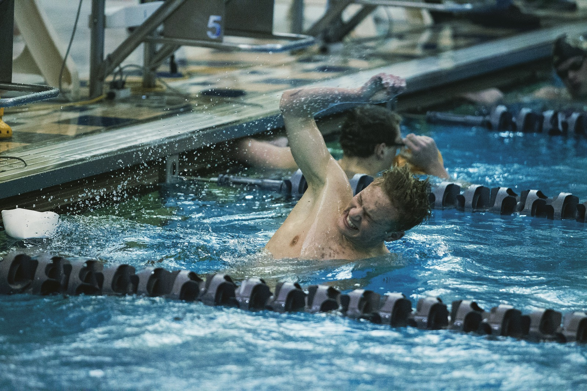
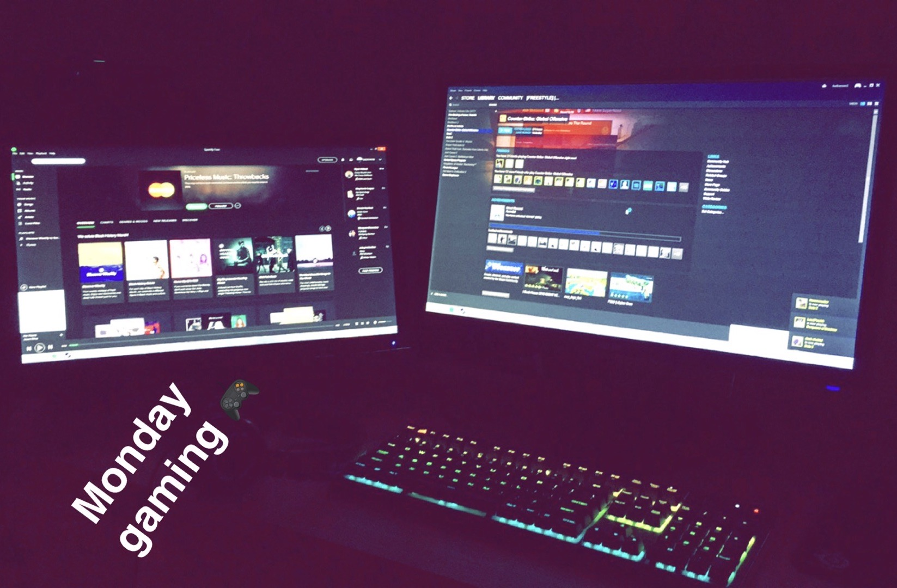
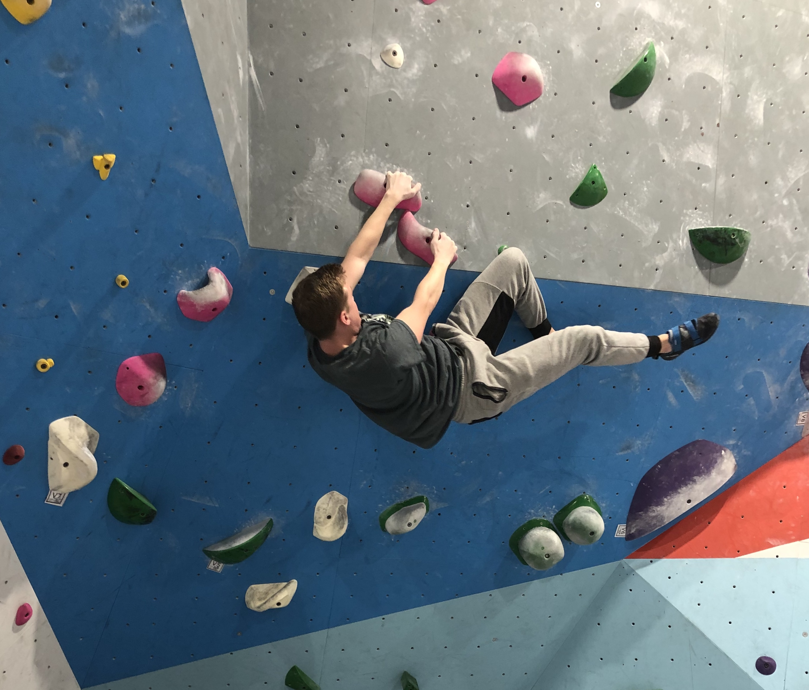

Hobbies
-
Swimming
One of my main hobbies is swimming. I have been swimming since I was four years old, and since then, have attended numerous national meets and qualified for olympic trials. Swimming has been a big part of my life, and I have met some of my closest friends through this sport.
-
Video Games
Video games are another one of my main hobbies. I have played video games since I was very young, and it has been a big part of my life. I have attended a number of gaming tournaments for video games, specifically Counter Strike and League of Legends.
-
Climbing
Recently, climbing has been another one of my hobbies. There are two types of climbing that I do, bouldering and top rope. Bouldering is short, technical climbs which typically are less than 15 feet and you do not wear a harness or rope. Top rope is what people typically associate with climbing. It is much higher climbing which is more focused on endurance rather than power. In top rope, you have a harness and are tied in. Climbing has brought me great friends, even if it has not been long.